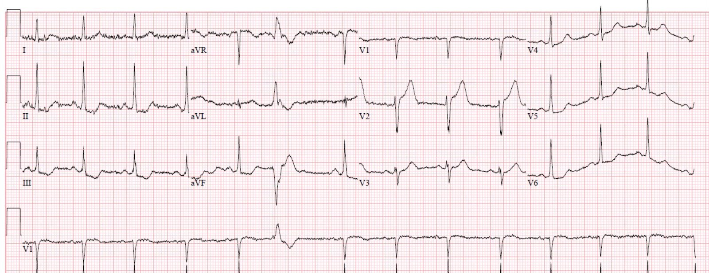
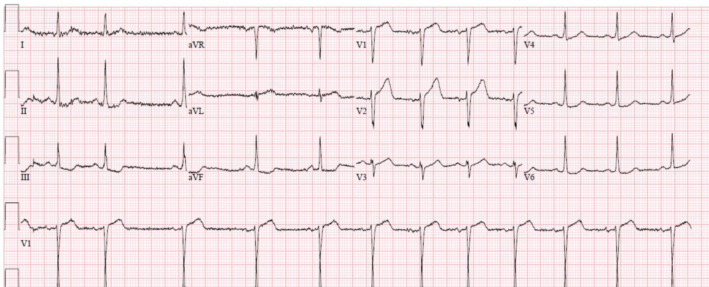
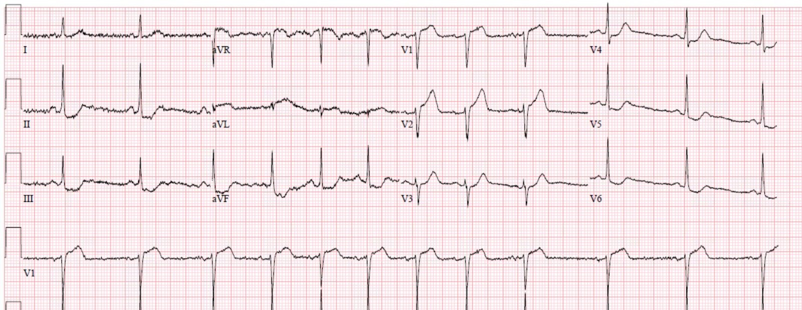
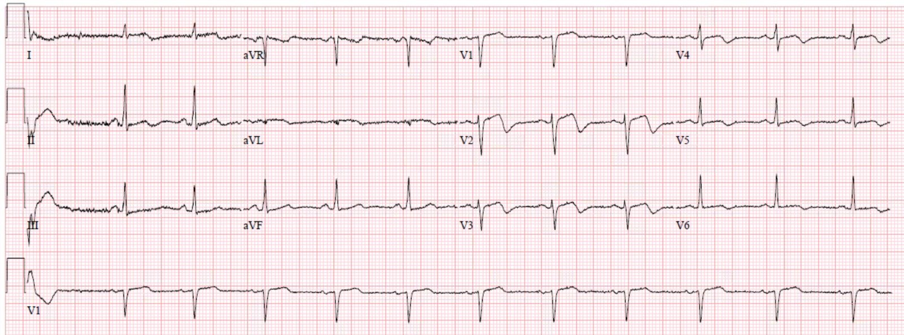
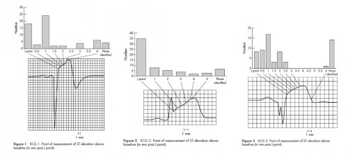
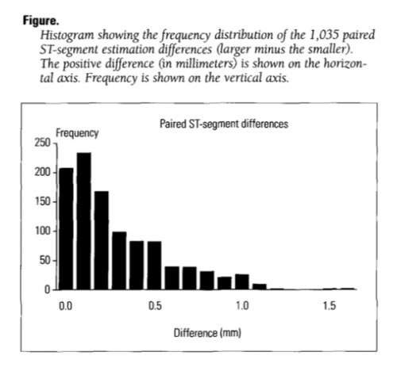
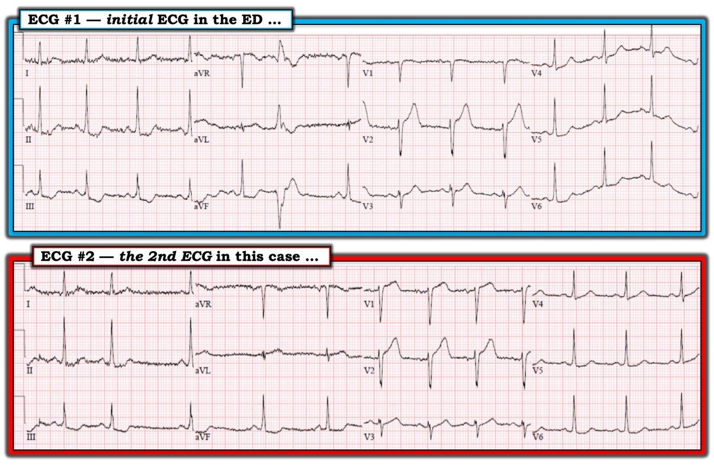

26/05/2019 — Nam giới sáu mươi mấy tuổi đau ngực lúc nửa đêm, troponin không phát hiện được
Bản dịch tiếng Việt của bài "A man in his sixties with chest pain at midnight with undetectable troponin" – Dr. Smith’s ECG Blog. Giữ nguyên toàn bộ 9 hình ảnh của bản gốc.
Tác giả: Pendell Meyers
Một bệnh nhân nam 60 mấy tuổi, không có tiền sử bệnh lý đã biết, đến khám lúc nửa đêm vì đau ngực trong 3 giờ qua. Cơn đau bắt đầu ngay sau khi ăn, và lúc đầu ông nghĩ đó là “trào ngược”, tuy nhiên sau vài giờ không đỡ, ông quyết định gọi 911.
Đây là điện tâm đồ lúc nhập viện của ông:


Đây là các dấu hiệu đáng chú ý:
ST chênh lên (STE) nhẹ ở V1
STE 2,5 mm ở V2
ST chênh xuống (STD) nhẹ ở V4-V6
STD rõ ràng ở II, III và aVF
Sóng T tối cấp ở V2, và nhiều khả năng cả ở aVL
Những dấu hiệu này có độ đặc hiệu cao cho tắc LAD. Blog này có nhiều ca mang hình ảnh này, gồm STE và sóng T tối cấp ở V1-V2, kèm STD ở các chuyển đạo bên (xem các link bên dưới). Trong ca này còn có STD soi gương ở các chuyển đạo dưới và sóng T tối cấp ở aVL.
Ghi chú bên lề: Đôi khi hình ảnh này bao gồm một hình thái mà một số người mô tả là “sóng T cao mới xuất hiện ở V1”, hoặc đôi khi là “sóng T ở V1 lớn hơn ở V6” — về bản chất đó chỉ là mô tả một sóng T tối cấp ở V1, ngoại trừ việc nên mô tả nó là sóng T vừa cao vừa phình to/lớn/rộng/đầy đặn (bulky) thì đúng hơn, chứ không chỉ là “cao”. Dr. Smith ghi nhận “sóng T cao mới xuất hiện ở V1” ở 14% các ca tái cực sớm so với 34% các ca tắc LAD kín đáo trong nghiên cứu xây dựng công thức OMI thành trước. Điện tâm đồ ban đầu này không có hình ảnh đó, tuy nhiên hãy để ý hình ảnh này trong các điện tâm đồ liên tiếp.
Nhóm chúng tôi nhận ra điện tâm đồ này thể hiện tắc LAD. Nhưng xét về mặt kỹ thuật thì nó không đạt tiêu chuẩn STEMI. Chúng tôi lập tức gọi bác sĩ can thiệp để trình bày mối lo ngại của mình. Họ đánh giá bệnh nhân và cũng lo ngại, tuy nhiên họ cho rằng chưa cần thông tim ngay vì chưa đạt tiêu chuẩn STEMI.
Chúng tôi bắt đầu điều trị nội khoa tối đa, bao gồm truyền nitroglycerin.
Mọi chuyện càng khó khăn hơn khi troponin đầu tiên, dĩ nhiên, trả về kết quả không phát hiện được (xét nghiệm troponin thế hệ hiện hành của chúng tôi hiếm khi nhích lên trước 4-6 giờ sau khởi phát OMI).
Trong thời gian này, chúng tôi ghi điện tâm đồ liên tiếp không ngừng, cố tìm một bản ghi có thể thuyết phục khoa tim mạch.
Đây là bản ghi rõ nhất mà chúng tôi có được:


Dù chúng tôi tin rằng điện tâm đồ này đạt tiêu chuẩn STEMI, các đồng nghiệp tim mạch không đồng ý. Điều này không hiếm gặp và cũng không bất ngờ, vì bằng chứng trước đây (xem phần điểm y văn ở cuối bài) cho thấy độ tin cậy giữa các người đọc, và thậm chí trong cùng một người đọc, khi đo đoạn ST là rất kém.
Bác sĩ tim mạch đã trực tiếp ở lại trong phòng để xem các triệu chứng và dấu hiệu điện tâm đồ của bệnh nhân có còn dai dẳng dù đã điều trị nội khoa hay không.
Quả nhiên, các dấu hiệu điện tâm đồ và cơn đau do thiếu máu cục bộ vẫn tồn tại suốt 20-25 phút, và các bác sĩ tim mạch đã quyết định đúng là tiến hành thông tim cấp cứu thay vì tiếp tục điều trị nội khoa, như các hướng dẫn đa quốc gia khuyến cáo bất kể dấu hiệu hay cách diễn giải điện tâm đồ.
Chúng tôi ghi thêm một điện tâm đồ cuối cùng trước khi bệnh nhân lên phòng thông tim:


Thời gian từ lúc đến viện tới khi thông tim chỉ dưới 2 giờ.
Phát hiện tắc 100% LAD đoạn giữa do huyết khối, đã được đặt stent với kết quả chụp mạch rất tốt.
Đây là điện tâm đồ ngày hôm sau, xác nhận đã tái tưới máu vùng hạ lưu:


Siêu âm tim cho thấy rối loạn vận động thành ở các vùng trước, vách, bên và mỏm.
Troponin T đỉnh là 1,87 ng/mL.
Những điểm cần học:
Chúng ta phải thành thạo các dấu hiệu điện tâm đồ kín đáo của nhồi máu cơ tim do tắc (Occlusion MI), vì mô hình hiện nay của chúng ta là không đủ.
Các điện tâm đồ liên tiếp thường có thể giúp một quyết định khó trở nên dễ hơn.
Thiếu máu cục bộ dai dẳng dù đã điều trị nội khoa tối đa rất có khả năng là do nhồi máu cơ tim do tắc và là chỉ định thông tim cấp cứu bất kể dấu hiệu điện tâm đồ.
Các xét nghiệm troponin thế hệ hiện hành thường không phát hiện được trong 4-6 giờ đầu của nhồi máu cơ tim do tắc, chính là lúc lợi ích của tái tưới máu cấp cứu là lớn nhất.
Xem các ca tắc LAD khác có hình ảnh kín đáo tương tự gồm STE và sóng T tối cấp ở V1-V2, kèm STD ở V5-V6:
How long would you like to wait for your Occlusion MI to show a STEMI? Sometimes serial ECGs minimizes the delay. (Bạn muốn chờ bao lâu để nhồi máu cơ tim do tắc của mình biểu hiện thành STEMI? Đôi khi các điện tâm đồ liên tiếp giúp giảm thiểu sự chậm trễ.)
What will you do for this patient transferred to you who is now asymptomatic? (Bạn sẽ làm gì với bệnh nhân được chuyển đến bạn này, người hiện đã hết triệu chứng?)
Crushing Chest pain, but the ECG is not obvious; later there is both RBBB and LBBB (Đau ngực dữ dội như bị đè nghiến, nhưng điện tâm đồ không rõ ràng; sau đó có cả RBBB lẫn LBBB)
35 yo woman with LAD occlusion manifesting with only hyperacute Ts and inferior ST depression, also missed by computer (Phụ nữ 35 tuổi bị tắc LAD chỉ biểu hiện bằng sóng T tối cấp và ST chênh xuống thành dưới, cũng bị máy tính bỏ sót)
McCabe và cs., Journal of the American Heart Association. Physician accuracy in interpreting potential ST-segment elevation myocardial infarction electrocardiograms. Tạp chí Journal of the American Heart Association 2013;2:e000268.
Một khảo sát cắt ngang được thực hiện bằng cách cho các bác sĩ cấp cứu, bác sĩ tim mạch và bác sĩ tim mạch can thiệp xem 36 điện tâm đồ từ cơ sở dữ liệu Activate-SF gồm các lần kích hoạt báo động STEMI tiến cứu. 12 (33%) trong 36 ca không có tổn thương thủ phạm (được định nghĩa là không phải STEMI), trong khi 24 (66%) ca còn lại là dương tính thật với tắc cấp hoàn toàn (được định nghĩa là STEMI). Điều này tương ứng khá sát với tỷ lệ kích hoạt STEMI dương tính giả chung thực tế trong toàn bộ sổ bộ (registry) là 36%, được ghi nhận từ thực hành tiến cứu. Với mỗi điện tâm đồ, các bác sĩ được hỏi: “dựa vào điện tâm đồ trên, có một động mạch vành bị tắc gây STEMI hay không?” 124 bác sĩ đã đọc tổng cộng 4392 điện tâm đồ. Giá trị kappa chung của mức đồng thuận giữa người đọc chỉ là 0,33, phản ánh mức đồng thuận kém. Độ nhạy và độ đặc hiệu chung đối với STEMI dương tính thật (tắc mạch) chỉ là 65% (KTC 95% 63-67%) và 79% (KTC 95% 77-81%). Cứ mỗi 5 năm kinh nghiệm kể từ khi tốt nghiệp trường y thì odds đọc đúng tăng 6%. Sau khi hiệu chỉnh theo kinh nghiệm, không có khác biệt về odds đọc đúng chung giữa các chuyên khoa. Tuy nhiên, các bác sĩ tim mạch can thiệp có độ đặc hiệu theo nhóm cao nhất là 89%, trong khi các bác sĩ cấp cứu điều trị chính (attending) có độ nhạy theo nhóm cao nhất là 74%. Nghiên cứu xuất sắc này được củng cố bởi nhiều nghiên cứu khác cho thấy độ tin cậy giữa các người đánh giá là kém (35-37).
Bạn có thể làm bài kiểm tra STEMI với chính các điện tâm đồ mà McCabe và cs. đã dùng:
Carley và cs. What’s the point of ST elevation? Tạp chí Emergency Medicine Journal 2002;19:126-128.
Nghiên cứu cắt ngang, trong đó 63 bác sĩ thường xuyên chỉ định thuốc tiêu sợi huyết cho nhồi máu cơ tim cấp được yêu cầu nhận diện và định lượng mức độ STE trên 3 phức bộ điện tâm đồ mẫu. Họ cũng được yêu cầu đánh dấu trên điện tâm đồ vị trí mà họ xác định là điểm J. Nhìn chung, STE không được nhận ra ở 23 (12%) trường hợp. Với các hình 1-3 dưới đây, tỷ lệ bác sĩ xác định đúng điểm J lần lượt là 29%, 61% và 13%.


Tandberg và cs. Observer variation in measured ST-segment elevation. Tạp chí Annals of Emergency Medicine 1999 Oct;34;448-52.
Một khảo sát mù, theo mẫu ghép cặp, được tiến hành trên 52 đối tượng gồm các bác sĩ cấp cứu, bác sĩ nội trú cấp cứu và sinh viên y khoa năm cuối. Họ được phát một xấp 40 điện tâm đồ, mà không được biết rằng thực ra xấp này gồm các cặp giống hệt nhau, xếp theo thứ tự ngẫu nhiên, của chỉ 20 điện tâm đồ từ những bệnh nhân “nhồi máu cơ tim đã được chứng minh bằng men tim”. Họ được yêu cầu đo tất cả các điện tâm đồ, sau đó khác biệt giữa hai lần đo cùng một điện tâm đồ của mỗi người đọc được phân tích. Khác biệt trung bình về chiều cao đoạn ST giữa tất cả các nhóm là 0,28 mm. Mức đồng thuận thống kê chung giữa các cặp đo đoạn ST là rất tốt (K=0,85). Tuy nhiên, “cứ năm lần thì có một lần, các số đo ST chênh lên ghép cặp của cùng một người quan sát chênh nhau hơn nửa milimét”. Khi được hỏi cụ thể đoạn ST chênh lên có lớn hơn hoặc bằng 2,0 mm hay không, người đọc tự mâu thuẫn với chính mình ở 14% trường hợp.



===================================
Bình luận của KEN GRAUER, MD (27/5/2019):
===================================
Một ca bệnh được Dr. Pendell Meyers viết tuyệt vời (và rất khéo léo), về một bệnh nhân nam 60 mấy tuổi trước đây khỏe mạnh, đến khám vì mới khởi phát đau ngực. Khi xem lại ca này, tôi có 2 câu hỏi:
- Câu hỏi #1: Vào lần tới gặp một ca tương tự, bác sĩ tim mạch này sẽ làm gì?
- Câu hỏi #2: Vì sao lần tới họ sẽ làm điều mà họ đã trả lời ở Câu hỏi #1?
Cho rõ ràng — tôi đã ghép trong Hình 1 2 điện tâm đồ đầu tiên của ca này — vì quyết định thông tim đã được đưa ra trước khi ghi bản ghi thứ 3.
- LƯU Ý: Điện tâm đồ #2 không phải là bản ghi thứ 2 trong ca này — vì nhiều điện tâm đồ đã được ghi liên tục sau điện tâm đồ #1 nhằm thuyết phục khoa tim mạch đưa bệnh nhân đi thông tim cấp cứu …


Dr. Meyers đã nhắc lại một cách thuyết phục luận điểm từng được nêu nhiều lần trên blog này:
- Mô hình nhận diện hiện nay là không đủ — vì có quá nhiều bác sĩ tim mạch vẫn “mắc kẹt” vào việc đòi hỏi định nghĩa STEMI cấp theo milimét.
- Phụ thuộc vào “định nghĩa theo milimét” này có thể gây hại cho bệnh nhân — vì thông tim cấp cứu được chỉ định khi triệu chứng dai dẳng và có bằng chứng rõ ràng của thiếu máu cục bộ cấp. Thời gian là cơ tim.
- Dù y văn đã ghi nhận độ tin cậy giữa các người đọc và trong cùng một người đọc là kém, ngay cả ở các bác sĩ chuyên gia — các dấu hiệu trên điện tâm đồ #1 không nên bị phủ nhận.
- Dựa vào các xét nghiệm troponin thế hệ hiện hành là một chiến lược sai lầm — vì troponin sẽ không tăng cho đến khi thời gian quý báu đã trôi qua.
- Mặt khác — siêu âm tim khẩn (Stat Echo) trong lúc có triệu chứng có thể ngay lập tức xác nhận rằng các dấu hiệu trên điện tâm đồ #1 là thật và đáng được thông tim ngay lập tức!
Cũng phải ghi nhận cho bác sĩ tim mạch này — anh/chị ấy đã ở lại trong phòng và trực tiếp theo dõi bệnh nhân trong lúc điều trị nội khoa — và tổng thời gian từ lúc đến khoa cấp cứu (ED) tới khi thông tim là dưới 2 giờ.
- Dù vậy — lẽ ra phải mất ít thời gian hơn để thuyết phục khoa tim mạch rằng một người đàn ông 60 mấy tuổi trước đây khỏe mạnh, đau ngực mới khởi phát và đến viện với Điện tâm đồ #1 cần được đưa đi thông tim ngay lập tức.
- Điện tâm đồ #2 — cho thấy rõ sự tiến triển của các dấu hiệu thiếu máu cục bộ, và chắc chắn lẽ ra đã phải là đủ nếu có sự do dự dựa trên điện tâm đồ #1.
- TỰ VẤN Lương tâm — Y học cấp cứu là một nghề vô cùng thử thách. Thực tế là chúng ta phải học từ sai lầm. Không ai trong chúng ta hoàn hảo. Tôi đã học được những bài học đôi khi rất khó khăn này khi là bác sĩ điều trị chính (Attending) chịu trách nhiệm đào tạo và giám sát các bác sĩ nội trú trong suốt 30 năm sự nghiệp học thuật của mình. Hy vọng duy nhất của tôi là (các) bác sĩ tim mạch liên quan đến ca này đã dành chút thời gian sau khi thông tim để nghiêm túc tự vấn xem lẽ ra anh/chị ấy có thể làm gì khác đi trong ca này — và anh/chị ấy sẽ làm gì vào lần tới khi gặp một tình huống tương tự.
Suy Nghĩ của tôi về Điện tâm đồ #1: Dr. Meyers đã nêu bật xuất sắc các dấu hiệu MẤU CHỐT (ở trên). Tôi xin bổ sung những suy nghĩ sau:
- Hình ảnh ST chênh lên + tối cấp của sóng ST-T ở chuyển đạo V2 trên điện tâm đồ #1 phải được nhận ra từ cách xa 5 feet. Gọi sóng T ở chuyển đạo này là “cao không tương xứng” vẫn chưa nói hết mức độ của nó.
- Chúng ta biết chuyển đạo V2 không phải là một “sai lệch ngẫu nhiên” — vì hình dạng bất thường rõ rệt của đoạn ST dạng bậc thềm (thẳng) ở chuyển đạo lân cận V3. (Dù kín đáo hơn — sóng T ở V3 cũng cao không tương xứng, với đáy rộng hơn mức đáng có, xét theo sóng r nhỏ ở chuyển đạo này.).
- Nhiều chuyển đạo khác cho thấy ST dẹt/ST thẳng đuỗn (V4, V5, V6) — kèm ST chênh xuống rõ ở các chuyển đạo II, III và aVF.
- Như Dr. Meyers đã nêu — có hình ảnh tối cấp kín đáo-nhưng-có-thật của sóng ST-T ở chuyển đạo aVL.
- Vượt ra ngoài phần cốt lõi: Nếu bạn nhìn vào PVC ở chuyển đạo aVR — tôi tin rằng phần đầu dạng vòm (coved) của đoạn ST ở chuyển đạo này là không điển hình rõ rệt, và phản ánh ST chênh lên cấp.
Điều Cốt lõi về Điện tâm đồ #1: Ở một bệnh nhân trước đây khỏe mạnh, đau ngực mới khởi phát — Không thể xem nhẹ hình ảnh cấp tính của sóng ST-T ở chuyển đạo V2. Việc dấu hiệu này là thật được chứng minh đầy đủ bởi ST dẹt và/hoặc chênh xuống ở nhiều chuyển đạo khác.
- Về Điện tâm đồ #2 — Khác biệt chính mà tôi thấy giữa điện tâm đồ #1 và điện tâm đồ #2 là giờ đây có ST chênh lên rõ ở chuyển đạo V1. Tôi hiểu khuynh hướng cố tự thuyết phục bản thân rằng “chỉ có 1 chuyển đạo thay đổi” — nhưng đây là một thay đổi trên các bản ghi liên tiếp ở một bệnh nhân đau ngực đang tiếp diễn. So sánh cẩn thận từng chuyển đạo về hình thái QRS ở 6 chuyển đạo ngực của cả hai bản ghi xác nhận rằng vị trí đặt điện cực ngực không thay đổi đáng kể. Vì vậy, ST chênh lên mới rõ ràng với hình ảnh tối cấp hiện thấy ở chuyển đạo V1 trên điện tâm đồ #2 là có thật.
- Hy vọng duy nhất của tôi là (các) bác sĩ tim mạch liên quan đến ca này sẽ xem lại một lần nữa 2 điện tâm đồ này — rồi so sánh với điện tâm đồ thứ 3 của ca này như một lời nhắc về điều xảy ra khi bạn chờ thêm chỉ một chút nữa thôi …
Chúng tôi xin CẢM ƠN Dr. Meyers đã làm nổi bật các diễn biến trong ca này.